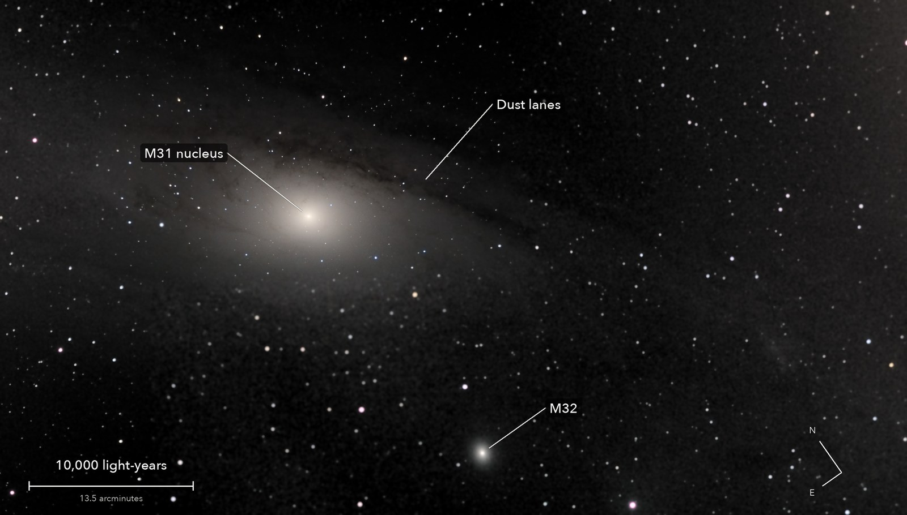
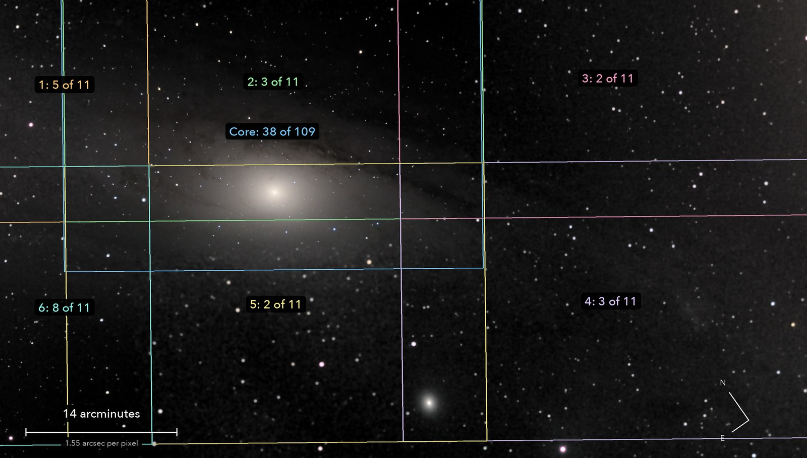

The Andromeda Galaxy: core, dust lanes and a companion
Messier 31 and Messier 32
Six fields joined round the galaxy's core. M32, the fuzzy ball below it, is a small galaxy in orbit round Andromeda.
What you are looking at

Swipe sideways to see the rest. Tap the picture for full size.
- Distance
- 2.5 million light-years
- This picture spans
- 55,000 light-years; the galaxy's disc is about 2.5 times wider
- The light left
- 2.5 million years ago
- For scale
- Each pixel is about 19 light-years across
For photographers
A 3 x 2 mosaic joined to the deep core field; each outline is one sensor frame, with frames kept of frames taken.

Swipe sideways to see the rest. Tap the picture for full size.
- Exposures
- Panels: 30 s at ISO 3200. Core: 20 s at ISO 3200
- Frames
- 66 panel frames taken, 23 kept: 11.5 minutes. 43 lost to cloud. The core adds 38 frames, 12.7 minutes
- Mosaic
- Each panel plate-solved, then all solved jointly on shared stars (0.4 to 0.6 arcsec). One brightness scale per panel from shared stars; backgrounds matched with a plane per panel; feathered
- Sampling
- 1.552 arcsec per pixel. Stars 4.1 arcsec wide
- Field
- 74.8 x 42.5 arcmin, cropped level from the mosaic; one frame is 38.8 x 25.9
- When
- 4 October 2026, in the small hours, over 67 minutes. 72 to 61 degrees up, Moon up, cloud passing
- Honest limits
- Outside the core field the panels hold 1 to 14 percent of the core's depth, and are shown in grey because their colour zero is not trusted. A map, not a measurement
- Calibration
- Flat from 26 twilight-sky frames, its large-scale shape from cloud-lit frames; the dust in it checked against this hour's frames. No darks
- Finish
- Black 53 and white 226 of 255, gamma 1.2, S-curve 0.3. Dark sky made neutral and smoothed (bilateral, 3.5 px)
- Telescope
- Celestron 8SE Schmidt-Cassegrain with dew shield: 203 mm aperture, 2,084 mm focal length (measured by plate solve), f/10.3
- Camera
- Sony a6000, stock, at prime focus: APS-C 23.5 x 15.6 mm, 6000 x 4000, 3.9 micron pixels, RAW
- Mount
- Sky-Watcher EQ6-R, unguided. Set down 27 degrees off the pole; both axes driven from a pointing model fitted to plate solves. Residual drift about 0.1 arcsec per second
© 2026 Brad Gessler · Celestron 8SE (8 inch, 2,080 mm) and Sony a6000 on an EQ6-R · San Francisco Bay Area · 4 October 2026
Capture and mount: Observatory (Elixir on a Raspberry Pi 3). Stacking: numpy, OpenCV, rawpy. Plate solving: astrometry.net. Stacked from the camera's RAW frames. Nothing generated.
© 2026 Brad Gessler. The pictures and the words are his own; all rights reserved.